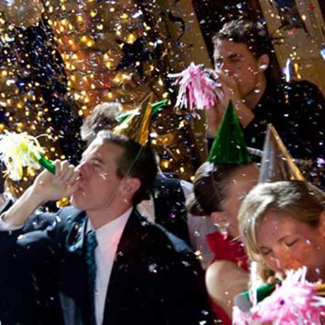

This page has as a purpose, the promotion and organization of artistic activities aimed at the Venezuelan and American public in Tennessee. The central theme of these activities will be Venezuela, bearing the various cultural manifestations that characterize it. not only has the participation of Venezuelan artists who are visiting Tennessee, but also, in a spatial way, it will seek to project the activity of women and men who are part of the Venezuelan community of Tennessee.
VENEZUELA IS DIVERSITY

The visual arts, literature, music, traditions, food and cinema will be some of the forms of expression that through this website will seek to approach the wealth of colors, sounds and ideas that are present in Venezuelans.
NEW EVENTS
Salsa Lessons
Every wednesday join Carlos Colon for some Salsa! Embargo restaurant will be offering $5 mojitos

Learn More...
New Year's Eve Countdown
The night will vibrate at Palomas Tapas Bar for our annual countdown. We will be offering grapes!
Learn More...
Nelson Arrieta Concert
Concierto en Nashville! Arrieta will be join us at the Bar Rest Bucanas in his tour "Asi es la vida"

Learn More...